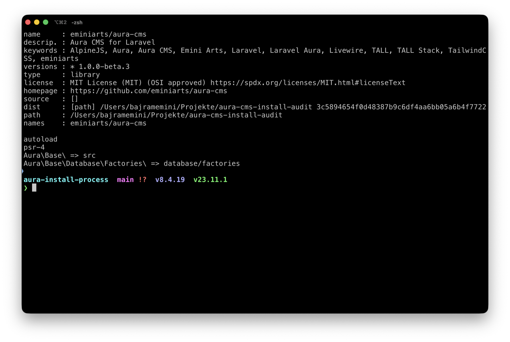
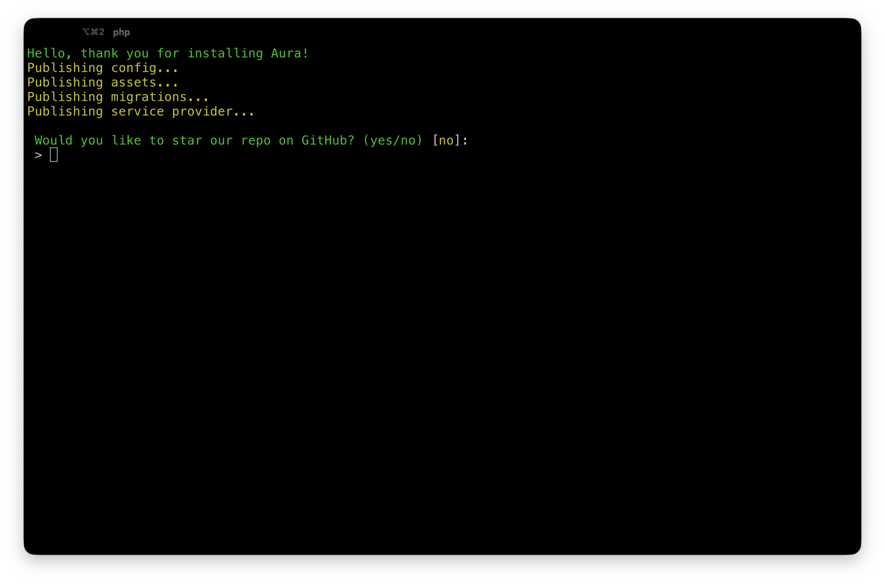
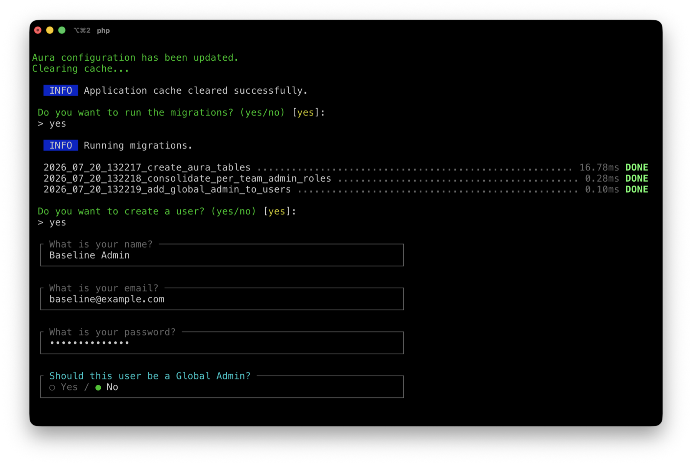
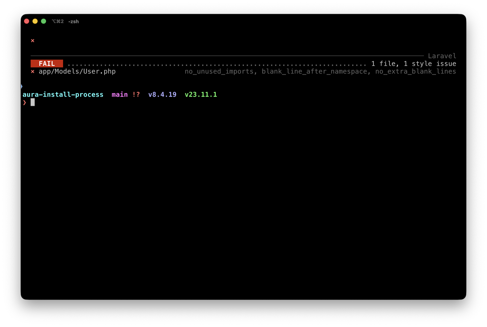
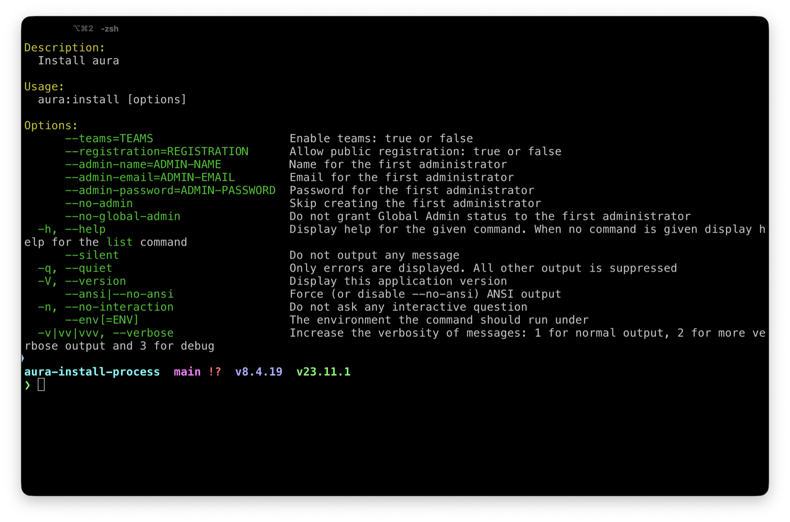
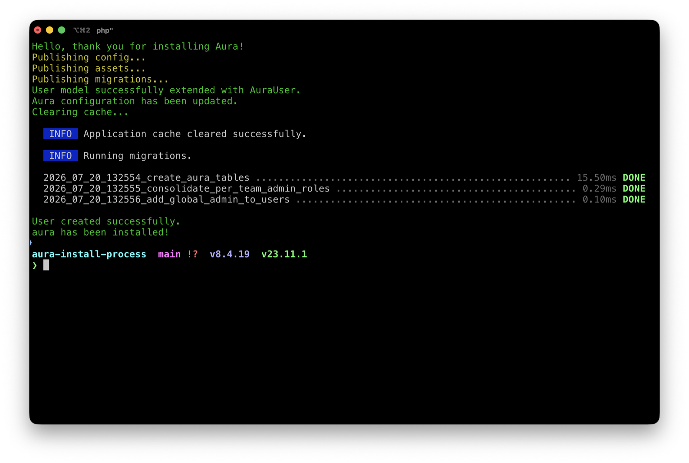
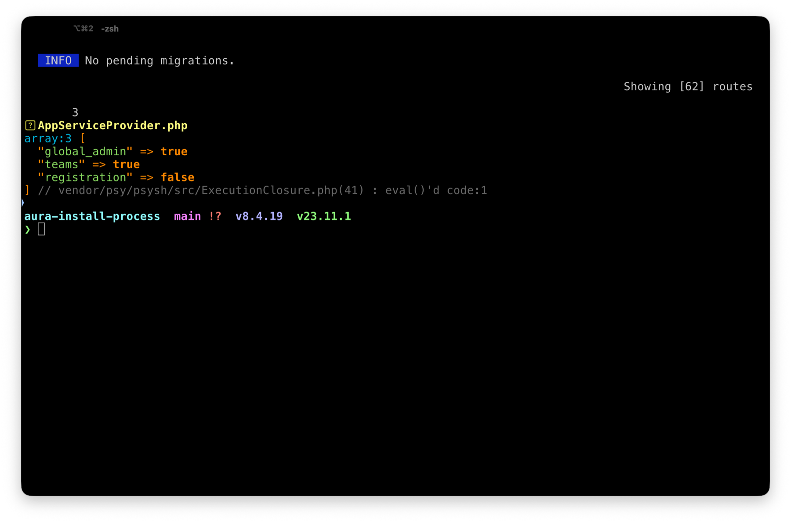
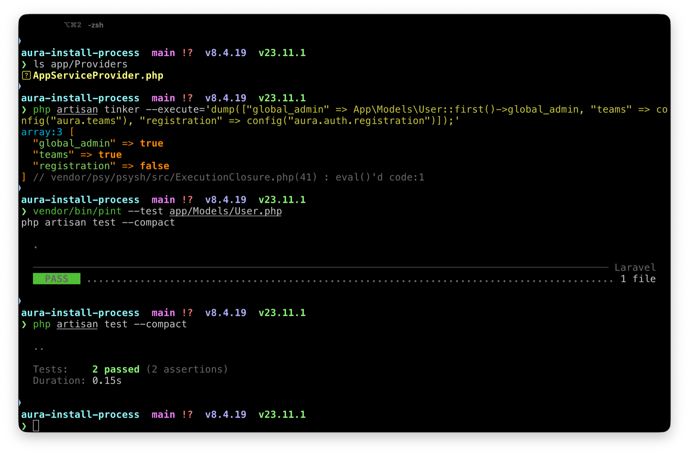
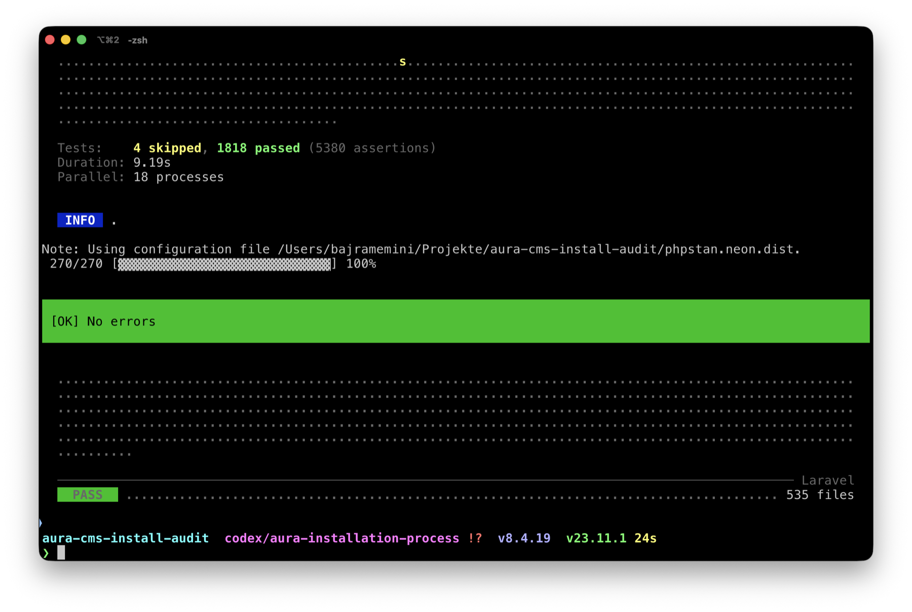

Wrong registration path
The first candidate read features.registration, while Aura stores the option at auth.registration. A focused regression now protects the correct path.
A clean-room installation audit of v1.0.0-beta.3, followed by a corrected candidate run through Laravel Herd and iTerm.
The exact published beta.3 package was installed first. It reproduced the four previously identified product questions and the Laravel 13 User-model formatting failure.
The candidate was then installed from the beta.3-based branch in a fully reset application. It completed without interaction, created a Global Admin, respected configuration flags, and passed every runtime and package quality gate.
Recommendation: merge the candidate changes, then cut the next prerelease so the documented command can target a published artifact.
The star prompt now targets eminiarts/aura-cms.
Teams, registration, administrator credentials, administrator omission, and Global Admin opt-out are explicit options.
doneThe first administrator is an instance-level Global Admin unless the operator explicitly opts out.
doneThe installer no longer says it published a service provider when no provider exists.
done
v1.0.0-beta.3, avoiding the older stable 0.2 release.
AppServiceProvider.php.





The first candidate read features.registration, while Aura stores the option at auth.registration. A focused regression now protects the correct path.
Writing only the environment value was insufficient because the command exported the already-resolved value into the published PHP config. The command now updates both outputs consistently.
The transformer now removes the obsolete Authenticatable import and preserves valid namespace spacing. Pint is part of the fresh-install CI gate.
Until Aura 1.0 is stable, documentation must require 1.0.0-beta.3 explicitly or Composer may select the older stable 0.2 series.
